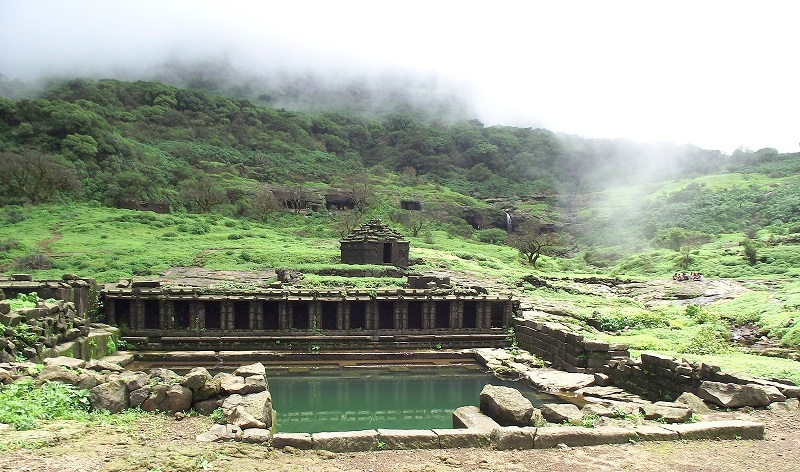

<div class="container-fluid">   
    <div class="row">
        <div class="col-md-12">
            <div class="card bg-dark text-white">
                
                <div class="card-img-overlay">
                <h5 class="card-title-main">Welcome to Harishchandragad!</h5>
                </div>
              </div>

              <div class="p1 mt-3">
                  <p>At a distance of 8 km from Khireshwar, 50 km from Bhandardara, 166 km from Pune & 218 km from Mumbai, Harishchandragad is a historical hill fort situated 
                    in Ahmednagar district of Maharashtra. Situated at an altitude of 1,424 m, the fort once played a major role in guarding and controlling the surrounding 
                    region. Harishchandragad is very popular place for trekking in Maharashtra and also one of the famous Bhandardara tourist places.
                    The fort originally dates back to the 6th century during the rule of Kalchuri dynasty. The citadel was built during this era and various caves 
                    probably have been carved out in the 11th century AD. Sage Changdev used to meditate here in 14th century AD. Later the fort was under the control of 
                    Mughals and Marathas captured it in 1747 AD. Remnants of Microlithic human inhabitants have been discovered here. The various Puranas like Matsyapurana, 
                    Agnipurana and Skandapurana have many references about Harishchandragad.
                    </p>
              </div>
              <div class="clearfix">
                
                <p>Rohidas, Taramati and Harishchandra are the three peaks in Harishchandragad. Taramati peak is the highest peak in the fort and provides a beautiful 
                    panoramic view of the nearby surroundings and the forest area. Many peaks and attractions like Malshej Ghat, Jivdhan, Nane Ghat, Ratangad & Kalsubai 
                    can also be seen from here. Konkan Kada or the Konkan cliff is a semi-circular rock wall and resembles a Cobra's hood. Apart from trekking opportunities, 
                    this fort has lot of temples and caves within the premises. The fort has a carved Lord Vishnu Temple with many idols and is believed to have been 
                    constructed by the Kalchuri dynasty.
                    Kedareshwar cave is a unique cave which is located on the way to the Harishchandreshwar temple. It is an abode to five feet-tall Shiva linga, 
                    surrounded by four pillars, in a pool of water. There are a few other temples including Nageshwar temple and Harishchandreshwar temple in this area. 
                    The Buddhist Caves near the fort are other prominent attractions.
                </p>
              </div>
              <div class="clearfix">
                
                <p>
                    There are 3 popular trekking trails to reach the fort - via Khireshwar Village, via Nalichi Vaat and the easiest one via Paachnai village. 
The trek route from Khireshwar village is a straight trail that goes towards Tolar Khind and it takes 2 to 2.5 hours one way. 
After Tolar Khind, there is a 100 feet rock patch, which has iron railings for the safety of trekkers. After crossing rock patch a straight way 
leads to Harishchandreshwar Temple with small hills & streams in between.

There is another way to reach Harischandragad from Paachnai village, which is 48 km away from Bhandardara. One needs to do 5 km trek from Paachnai 
to reach Harishchandragad. The trekking path is easy and beautiful as one can enjoy the natural beauty of forest. It takes approximately 3 hours to 
reach to the top of Harischandragad. There are many rocky patches and steep climbs enroute.

The third path is specially meant for hikers, which starts from Belpada village via Sadhleghat. From here, the route goes through Sadhleghat and 
is extremely difficult. Here one has to climb a straight rock patch on which grips are provided. The trail from here is uphill and continues to 
remain rocky. It takes 9 hours to reach the fort (on way) and the total distance is about 19 km from Belpada village.
 Camping is allowed on the peak.<br><br>
Timings: 4:15 AM to 11 PM.<br>

Distance from Bhandardara: 50 Kms<br>

How to reach:<br>

By Air: <br>
The nearest airport is at Pune.<br><br>

By Rail: <br>
Trains arrive here from Pune, Mumbai, Visakhapatnam via Bhandardara, Mysore and other cities.<br><br>

By Road:<br>
Private transport is more convenient if you would like to visit places around Bhandardara.<br><br>

By Bus:<br>
State-run and private bus services are available from many cities in Maharashtra and other states.<br><br>

By Walk & Trek :<br>
You can visit here by walk and trek also (upto your prefrences)<br><br>
                </p>
              </div>
              <div class="card mt-5">
                <h5 class="card-header">Hotels And Resorts near Rajmachi. </h5>
                <div class="card-body">
              <div class="row">
                <div class="col-sm-4">
                  <div class="card">
                      
                    <div class="card-body">
                      <h5 class="card-title">Hotel Ashwin</h5>
                      <p class="card-text">Unfussy rooms in a laid-back hotel featuring a restaurant, a nightclub & pools.
                    </p>
                      <a href="#" class="btn btn-primary">Book Room</a>
                    </div>
                  </div>
                </div>
                <div class="col-sm-4">
                  <div class="card">
                      
                    <div class="card-body">
                      <h5 class="card-title">Igatpuri Hills Retreat</h5>
                      <p class="card-text">Down-to-earth hotel offering a restaurant & an outdoor pool, plus a sauna, a steam room & a hot tub.
                      </p>
                      <a href="#" class="btn btn-primary">Book Room</a>
                    </div>
                  </div>
                </div>
                <div class="col-sm-4">
                    <div class="card">
                          
                      <div class="card-body">
                        <h5 class="card-title">Saj By The Lake Malshej</h5>
                        <p class="card-text">Saj By The Lake is situated in Malshej Ghat and features a garden. 
                          Boasting a 24-hour front desk, this property also has a restaurant and an outdoor pool.
                        </p>
                        <a href="#" class="btn btn-primary">Book Room</a>
                      </div>
                    </div>
                  </div>
                  <div class="col-sm-4">
                    <div class="card mt-3">
                          
                      <div class="card-body">
                        <h5 class="card-title">Dew-Drops Boutique Retreat</h5>
                        <p class="card-text">Offering an outdoor swimming pool and a restaurant, Dew Drops Boutique Retreat is located in Igatpuri. Free WiFi access is available in the public areas of this resort.</p>
                        <a href="#" class="btn btn-primary">Book Room</a>
                      </div>
                    </div>
                  </div>
                  <div class="col-sm-4">
                    <div class="card mt-3">
                      
                      <div class="card-body">
                        <h5 class="card-title">Central Park</h5>
                        <p class="card-text">
                           Featuring a restaurant, the 3-star resort has air-conditioned rooms with a private bathroom. 
                          The accommodations provides a 24-hour front desk, room service and organizing tours for guests.
                        </p>
                        <a href="#" class="btn btn-primary">Book Room</a>
                      </div>
                    </div>
                  </div>
              </div>
            </div>
        </div>
        </div>
    </div>
</div>